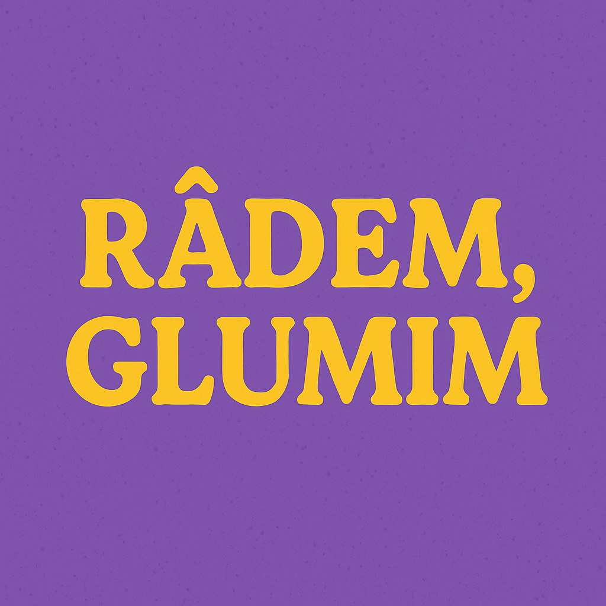
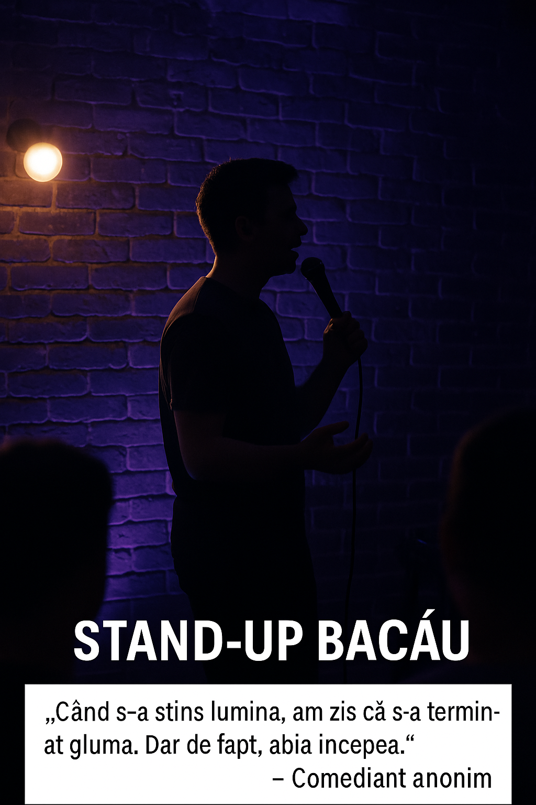

<!DOCTYPE html>
<html lang="ro">
<head>
  <meta charset="UTF-8">
  <meta name="viewport" content="width=device-width, initial-scale=1.0">
  <title>Râdem, Glumim - Copertă</title>
  <style>
    @import url('https://fonts.googleapis.com/css2?family=Comic+Neue:wght@700&display=swap');

    body {
  font-family: 'Segoe UI', sans-serif;
  background-color: #fef9f1;
  color: #2d0039;
  margin: 0;
  padding: 0;
  counter-reset: pagina;
  line-height: 1.4;
}
    .pagina {
  page-break-after: always;
  padding: 40px;
  position: relative;
  min-height: 90vh;
  counter-increment: pagina;
}
    .rubrica-gluma-scurta {
      position: absolute;
      bottom: 20px;
      left: 40px;
      right: 40px;
      font-size: 0.9em;
      background-color: #fff8cc;
      border-left: 5px solid #800080;
      padding: 10px;
      color: #444;
    }
    .coperta {
      background: radial-gradient(circle at center, #800080 0%, #ffcc00 100%);
      color: white;
      text-align: center;
      padding: 80px 20px;
      height: 100vh;
      display: flex;
      flex-direction: column;
      justify-content: center;
    }
 .coperta h1 {
  font-size: 4em;
  margin-bottom: 0.3em;
  color: #ffffff; /* Schimbă culoarea în alb */
}
    .coperta p {
  font-size: 1.5em;
  font-style: italic;
  text-shadow: 1px 1px 3px rgba(0, 0, 0, 0.7); /* Adaugă umbră pentru a face textul mai vizibil */
}

    .cuprins, section {
      padding: 40px;
    }
    h2 {
      color: #800080;
    }
    .evenimente-table {
      width: 100%;
      border-collapse: collapse;
    }
    .evenimente-table th, .evenimente-table td {
      border: 1px solid #800080;
      padding: 8px;
      text-align: center;
    }
    .evenimente-table th {
      background-color: #e6ccff;
    }
    .meme-img {
      width: 100%;
      max-width: 500px;
      margin: 10px 0;
      border: 2px solid #800080;
    }
    footer {
      text-align: center;
      font-size: 0.8em;
      margin-top: 50px;
      color: #800080;
    }
    a {
      color: #800080;
      text-decoration: none;
    }
    a:hover {
      text-decoration: underline;
    }

.pagina:nth-child(even),
.pagina:nth-child(odd) {
  background-image: url('https://www.transparenttextures.com/patterns/paper-fibers.png');
  background-repeat: repeat;
  background-size: 300px 300px;
}


</style>
</head>
<body>
    <div class="pagina coperta">
        
        <h1>Râdem, Glumim</h1>
        <p>Revista de Stand-Up – Aprilie 2025</p>
        <p>Glume, scandaluri, open mic-uri, povești de amor și alte nenorociri comice</p>
      </div>
      
<div class="pagina cuprins">
    <h2>Cuprins</h2>
    <ol style="list-style: none; padding-left: 0; border: 2px solid #800080; border-radius: 10px; background-color: #fff8ff; padding: 20px; max-width: 500px; margin: auto;">
      <li style="margin: 10px 0;"><span style="margin-right: 8px;">🔔</span><a href="#noutati">Noutăți din Lumea Comediei</a></li>
      <li style="margin: 10px 0;"><span style="margin-right: 8px;">📣</span><a href="#open-mic">Open Mic-erul Săptămânii</a></li>
      <li style="margin: 10px 0;"><span style="margin-right: 8px;">🚌</span><a href="#provincie">Stand-up în Provincie</a></li>
      <li style="margin: 10px 0;"><span style="margin-right: 8px;">💘</span><a href="#matrimoniale">Matrimoniale Comice</a></li>
      <li style="margin: 10px 0;"><span style="margin-right: 8px;">📰</span><a href="#cancan">Știri CanCan</a></li>
      <li style="margin: 10px 0;"><span style="margin-right: 8px;">🛍️</span><a href="#reclame">Reclame (aproape) false</a></li>
      <li style="margin: 10px 0;"><span style="margin-right: 8px;">🎤</span><a href="#interviu">Interviul Lunii</a></li>
      <li style="margin: 10px 0;"><span style="margin-right: 8px;">🗣️</span><a href="#barfe">Bârfe din Cluburi</a></li>
      <li style="margin: 10px 0;"><span style="margin-right: 8px;">🙃</span><a href="#recomandari">Ce NU recomandăm</a></li>
      <li style="margin: 10px 0;"><span style="margin-right: 8px;">📝</span><a href="#editorial">Editorial</a></li>
      <li style="margin: 10px 0;"><span style="margin-right: 8px;">🤣</span><a href="#glume-scurte">Rubrica de Glume Scurte</a></li>
      <li style="margin: 10px 0;"><span style="margin-right: 8px;">📬</span><a href="#contact">Scrie-ne!</a></li>
    </ol>
  </div>
  

<div class="pagina">
  <h2 id="noutati">🔔 Noutăți din lumea comediei</h2>
<p>În această ediție găsești glume, povești și bârfă cât să-ți ajungă pentru toată luna:</p>
<ul>
  <li>📣 Cine a rupt sala la Open Mic și cum Gigi a ajuns să deschidă la Comedy Point</li>
  <li>🚌 Ce s-a întâmplat la show-ul din Bacău și cum curentul s-a dus exact la punchline</li>
  <li>💘 Trei comedienți... singuri și disperați? Verifică rubrica Matrimoniale Comice</li>
  <li>📰 Exclusivități de CanCan cu râsete și rupturi de contracte (neplătite)</li>
  <li>🎤 Interviu cu Claudiu B. – cum a trecut de la glume ignorate la turneu național</li>
  <li>🗣️ Bârfe din Cluburi: ce se întâmplă cu Club 99, The Fool și tramvaiul-comedie</li>
  <li>🙃 Ce NU recomandăm (dar tot te trimitem cu cod de reducere și link de YouTube)</li>
  <li>📝 Editorial cu nerv, despre scene mici și visuri mari</li>
  <li>🤣 Glume scurte trimise de cititori (și câștigătoare în emisiunea <em>Stai Puțin!</em>)</li>
  <li>📬 Scrie-ne! Fii și tu parte din haosul nostru creativ</li>
</ul>
<p>Deschide revista, dă scroll, râzi cu poftă și spune-ne ce ți-a plăcut cel mai mult!</p>

</div>

  <div style="width: 90%; margin: 40px auto; border-top: 4px double #800080;"></div>


    <h2 id="open-mic">📣 Open Mic-erul Săptămânii: Gigi care a rupt sala</h2>
<p><strong>Nume:</strong> Gigi Glumețu</p>
<p><strong>Club:</strong> The Fool </p>
<p><strong>Glumă de impact:</strong> „Am încercat crowd work și am aflat că sunt adoptat.”</p>
<p><strong>Poveste:</strong> Gigi a început stand-up-ul din greșeală – literalmente. A fost invitat pe scenă de un prieten beat care a zis că „e amuzant acasă”. Spre surprinderea tuturor, inclusiv a lui, a dat-o bine. De-atunci a început să frecventeze open mic-urile din București și a devenit nelipsit de la testări. Ultimul set i-a adus aplauze în picioare și o invitație oficială de a deschide la Comedy Point săptămâna viitoare. Bravo, Gigi!</p>
<p><strong>Fun Fact:</strong> A făcut crowd work cu propria mamă. Din greșeală.</p>

      Glumă scurtă: „Mi-am dat demisia ca să fac stand-up. Acum fac glume despre cum n-am bani."
<div style="width: 90%; margin: 40px auto; border-top: 4px double #800080;"></div>
<div class="pagina">
  <h2 id="provincie">Stand-up în Provincie</h2>
  <p><strong>Oraș:</strong> Bacău</p>
  <p><strong>Public:</strong> 12 oameni + un chelner care râdea la glumele proprii</p>
  <p><strong>Context:</strong> Evenimentul s-a ținut într-un bar cu nume ironic – „La Curent”. Din păcate, numele a fost și profeție. Comediantul invitat a fost întâmpinat cu entuziasm, dar și cu o lipsă suspectă de becuri aprinse. Atmosfera a fost intimă, iar râsetele s-au auzit clar – nu aveai cum să le ratezi, erau doar 12.</p>
  <p><strong>Moment memorabil:</strong> Gluma despre CFR a fost urmată de întreruperea curentului. Publicul a râs... pe telefon, cu lanterna pornită. Se spune că momentul a fost mai amuzant decât gluma în sine.</p>
  <p><strong>Concluzie:</strong> Dacă râzi în provincie și nu te vede nimeni, a fost totuși un show reușit. Cel puțin pentru chelner.</p>

  <figure style="text-align:center; margin: 30px 0;">
    
    <figcaption style="margin-top:10px; font-style: italic; color: #800080;">&bdquo;Când s-a stins lumina, am zis că s-a terminat gluma. Dar de fapt, abia începea.&rdquo; – Comediant anonim</figcaption>
  </figure>
</div>

 <div style="width: 90%; margin: 40px auto; border-top: 4px double #800080;"></div>

<h2 id="matrimoniale">💘 Matrimoniale Comice</h2>
<p><strong>Singur? Singură? Ai glume bune, dar nimeni cu cine să le testezi?</strong><br>Trimite-ne o scurtă descriere și poate te includem în următoarea ediție. Sigur vrei să ieși la un date cu cineva care citește revista noastră. Asta spune deja mult!</p>
<ul>
  <li><strong>George, 32</strong> – crowd worker sensibil, cu job de zi în vânzări și hobby de a improviza în metrou. Locuiește în București și crede că o relație bună e ca un punchline: vine când te aștepți mai puțin. Îi plac plimbările pe jos și urăște oamenii care vorbesc în timpul setului. <br>📸 Instagram: <a href="https://instagram.com/georgeglumet" target="_blank">@georgeglumet</a></li>
  <li><strong>Irina, 28</strong> – face glume dark, dar e caldă pe interior. Copywriter și poetă urbană, e pasionată de jazz și crowd work în cafenele. Locuiește în Cluj-Napoca. Visează la o comedie romantică în care finalul nu e „doar prieteni”. <br>📸 Instagram: <a href="https://instagram.com/irinadark" target="_blank">@irinadark</a></li>
  <li><strong>Vlad, 40</strong> – divorțat de 2 ori, dar fidel scenei. Trăiește în Timișoara, iubește sarcasmul și comedia britanică. Spune că femeile îl părăsesc, dar microfonul nu. Preferă first date-uri la open mic-uri și spune că dacă nu râzi la glumele lui, e clar că nu merge.<br>📸 Instagram: <a href="https://instagram.com/vladfostul" target="_blank">@vladfostul</a></li>
</ul>
<p><em>*Dacă ne citești revista și vrei să-i contactezi pe Instagram… s-ar putea să fii puțin creepy. Dar hei, dacă le plătești bilet la show, noi suntem ok.*</em></p>

  <div style="width: 90%; margin: 40px auto; border-top: 4px double #800080;"></div>

  <h2 id="cancan">📰 Știri CanCan</h2>
  <article>
    <h3>🎤 EXCLUSIV – Comediantul plătit în exposure a cerut restul în aplauze</h3>
    <p>După ce a scris un set pentru un headliner cunoscut, un open mic-er a fost recompensat doar cu un shoutout pe Insta Story. Când a cerut și ceva cash, i s-a spus că râsul e o monedă de schimb. Din păcate, nu merge la Mega.</p>
  </article>
  <article>
    <h3>😱 DRAMĂ – Bordea a fost surprins râzând… la o glumă care nu era a lui!</h3>
    <p>Momentul a fost filmat și distribuit pe TikTok. Comunitatea de comedie e împărțită: unii spun că e o trădare, alții că e doar un semn că omul are simțul umorului. Cercetările continuă.</p>
  </article>
  <article>
    <h3>💼 CARIERĂ – Un open mic-er a renunțat la jobul din IT pentru glume despre... joburi în IT</h3>
    <p>„Acum nu mai plâng în baie în pauze, plâng pe scenă după punchline-uri care nu merg.” spune el. Publicul l-a aplaudat... cu empatie.</p>
  </article>
  <article>
    <h3>🧻 INCIDENT – Glumețul de serviciu de la Iași a fost confundat cu un mim</h3>
    <p>Nu a avut noroc cu microfonul wireless. S-a făcut liniște, dar gesturile au fost convingătoare. Publicul n-a râs, dar l-a filmat. Acum are 80k views pe TikTok la hashtagul #standupmut.</p>
  </article>

  <div style="width: 90%; margin: 40px auto; border-top: 4px double #800080;"></div>
  <h3 id="reclame">🛍️ Reclame (aproape) false</h3>
  <p>Până când ne vom asocia cu un brand adevărat, facem ce știm mai bine: glumim. Iată câteva reclame inventate, dar foarte aproape de adevăr:</p>
  <ul>
    <li><strong>Cafeaua „Punchline”</strong> – Te trezește după două seturi ratate. Tare ca un heckler, amară ca feedback-ul sincer. Disponibilă doar în backstage, sub tejghea.</li>
    <li><strong>Gelul „OpenMic Forte”</strong> – Pentru genunchii comediantului care stă în metrou 4 ore pentru 5 minute de glumă. Cu aromă subtilă de stres și cafea rece.</li>
    <li><strong>Aplicația „Date de Set”</strong> – Swipe doar pentru comedieni. Dacă nu mergeți la open mic împreună, nu mergeți deloc. Disponibilă pe toate platformele imaginare.</li>
    <li><strong>Apă plată „Pauză de râs”</strong> – Perfectă pentru când nu râde nimeni. Te hidratezi și îți revizuiești gluma.</li>
  </ul>
  <p><em>Ai și tu o idee de reclamă falsă? Trimite-ne pe <a href="mailto:redactie@rademglumim.ro">redactie@rademglumim.ro</a> și o includem!</em></p>
  <div style="width: 90%; margin: 40px auto; border-top: 4px double #800080;"></div>
  
    <h2 id="interviu">Interviul Lunii – Claudiu B.</h2>
<p><strong>„Publicul din Brăila e ca un test de alcoolemie. Dacă te țin pe scenă, ești clar beat.”</strong></p>

<h3>🎙️ Cum te-ai apucat de stand-up?</h3>
<p>Am fost mereu ăla care făcea glume la petreceri, la mese în familie și chiar la orele de mate, unde învățam mai puțin ecuații și mai mult să scap basma curată cu o glumă bună. Prima dată pe scenă a fost complet spontan: am văzut un open mic într-un bar, m-am înscris fără să spun nimănui și… am luat cel mai sincer refuz de la public. Am stat 3 minute fără să aud un râs, dar a fost ca un duș rece. A doua zi am început să scriu serios. Mi-am zis că dacă tot eșuez, măcar s-o fac cu stil.</p>

<h3>🧠 Ce te inspiră să scrii glume?</h3>
<p>Tot ce mă enervează sau mă face să ridic o sprânceană devine inspirație. Viața e o sursă infinită de material, mai ales când nu merge nimic conform planului. Metroul, vecinii care vorbesc prea tare, notificările bancare – toate au potențial comic. Îmi notez idei în Notes la 2 dimineața și apoi încerc să le fac să sune ca și cum le-am gândit sobru. Spoiler: nu le-am gândit sobru.</p>

<h3>👨‍👩‍👧‍👦 Ce părere are familia ta despre asta?</h3>
<p>La început au fost sceptici. Tata mi-a zis: „Băi, măcar dacă făceai glume bune...” iar mama m-a întrebat dacă pot să trăiesc din râs. Acum, după câteva show-uri și ceva apariții online, mama îmi dă feedback și glume, tata îmi spune când nu-i place delivery-ul, iar sora mea mi-a cerut o glumă la nuntă. Mi se pare cel mai tare lucru că au trecut de la îngrijorați la implicați.</p>

<h3>🎤 Care e comediantul tău preferat?</h3>
<p>Internațional, rămâne Dave Chappelle pentru finețea observațiilor. Național, îmi place Micutzu pentru naturalețea cu care face totul să pară improvizat. Dar adevărul e că mă inspir și din ce văd în baruri. Sunt colegi necunoscuți care scot niște glume geniale și mă fac să mă întorc acasă și să rescriu tot.</p>

<p style="margin-top: 30px; padding: 15px; background-color: #f4eaff; border-left: 5px solid #800080; font-style: italic;">
🔔 <strong>Nota redacției:</strong> Pe Claudiu B. îl puteți vedea live în turneul <strong>„Glume Sub Presiune”</strong>, care pornește luna aceasta prin țară. Verificați biletele și mergeți pregătiți cu râsul încălzit!
</p>
    

  <div style="width: 90%; margin: 40px auto; border-top: 4px double #800080;"></div>

<h2 id="barfe">🗣️ Bârfe din Cluburi</h2>
<p><strong>Unde a dispărut Open Mic-ul de la Club 99?</strong><br>
Zvonurile circulă cu viteza unei glume proaste despre horoscop: unii spun că organizatorul a plecat în Bali „pentru inspirație”, dar un insider ne-a șoptit că mai degrabă era epuizat de glumele despre Uber. Alții susțin că vecinii au făcut petiție – nu pentru zgomot, ci pentru lipsă de râsete. Club 99 promite că revine cu un format nou. Sau cu o cafenea literară. Rămâne de văzut.</p>
  

<p><strong>Marțea la Mișto de la The Fool... luată în serios?</strong><br>
Se pare că „mișto-ul” a devenit atât de subtil încât lumea chiar s-a supărat. O comediantă a fost aplaudată pentru o glumă despre divorț, deși era ironie. Concluzia? Publicul vrea și glume, dar și terapie.</p>

<p><strong>Vot la Comedy Point – Show-ul lui Serghei deschide urnele</strong><br>
La finalul serii, publicul poate vota câți „haha”-uri a dat. Se spune că un spectator a cerut și o urnă mobilă pentru nehotărâți. Serghei promite glume, suspans și poate un tur doi.</p>

<p><strong>EXCLUSIV – Primul show ținut la Lloyd’s Comedy Pub</strong><br>
Da, există. Da, e real. Și da, s-au făcut glume despre cum nimeni nu știa că există. S-ar putea să fi fost și public, dar poate era doar staff-ul. Rămâne o enigmă – una amuzantă.</p>
  
<div style="width: 90%; margin: 40px auto; border-top: 4px double #800080;"></div>

  
    <h2 id="recomandari">🙃 Ce NU recomandăm (dar tot îți spunem să mergi)</h2>
<p><em>Disclaimer: Nu recomandăm aceste show-uri, dar doar pentru că sunt prea bune și n-am prins bilete.</em></p>
  <h3>🎤 Show-uri live (dacă se țin)</h3>
<ul>
  <li><strong>Turneul "Glume din Teren" – Vlad, Irina și George</strong><br>
  Se plimbă prin țară, prin sate, prin orașe și prin glumele lor vechi și noi. <br>
  🎟️ Cod de reducere: <strong>RADEMGLUMIM</strong> pe bilete.ro</li>
  <li><strong>The Fool – Marțea la Mișto</strong><br>
  Nu știm dacă e glumă sau test de sinceritate. Unii râd, alții plâng, unii vin din greșeală și rămân pentru crowd work.</li>
  <li><strong>Comics Club – Sezonul 2 din Cupa ComedyBox</strong><br>
  Glume la duel, comedie ca-n sport. Singura cupă în care râzi și când pierzi.</li>
</ul>


<h3>📺 Ce s-a mai postat pe YouTube</h3>
<ul>
  <li><a href="https://youtube.com/@irinadark" target="_blank">Irina Dark</a> – un set sincer despre anxietate și cum să-ți găsești perechea în public</li>
  <li><a href="https://youtube.com/@vladfostul" target="_blank">Vlad Fostul</a> – un roast fin al propriilor divorțuri</li>
  <li><a href="https://youtube.com/@georgeglumet" target="_blank">George Glumețu</a> – crowd work în metrou, filmat cu o cameră care a supraviețuit trei scuturatui</li>
</ul>


<h3>👀 Ce am auzit ca urmează</h3>
<ul>
  <li>Se zvonește că Bordea și Micutzu lucrează la un roast secret – locația ar fi o spălătorie auto din Militari</li>
  <li>The Fool testează un format nou: stand-up fără microfon. Sau fără public? Încă nu e clar.</li>
  <li>Un show experimental la Green Hours cu comedie improvizată pe comentarii de TikTok</li>
  <li>Un podcast de comedie live într-un tramvai. Se filmează. Se claxonează. Se râde.</li>
</ul>

  <div style="width: 90%; margin: 40px auto; border-top: 4px double #800080;"></div>

  <div class="pagina">
    <h2 id="editorial">📝 Editorial – Din culisele comediei 🎭</h2>
    <p>Editorialul este vocea redacției – locul unde ne vărsăm nervii, râsetele și gândurile despre viața de comediant 🤹‍♂️🎤. Stand-up-ul e singura meserie unde, dacă nu râde nimeni, te întrebi dacă ai ales greșit viața 🤔. Și dacă râd prea tare… te întrebi ce au greșit ei 😂.</p>
  
    <p>Dar ce nu se vede e partea de dedesubt: nopțile petrecute la open mic-uri în fața a patru oameni, feedback-ul sincer (și uneori dureros) de la colegi și publicul care te judecă dintr-un scroll 📱. E viața pe care am ales-o, între aplauze 👏 și anxietate 😬, între eșecuri comice 😅 și glorie spontană 🌟.</p>
  
    <p>Uneori râdem. Alteori ne prefacem că râdem. Dar întotdeauna, ne întoarcem pe scenă. Pentru că dacă nu noi, atunci cine? 🎙️</p>
  
    <p>Și totuși, din tot acest haos, se nasc proiecte. Unele mici, care prind greu. Altele, care explodează din nimic. Îți amintești de Open Mic-ul din beciul Clubului 99? A început cu 6 spectatori, două scaune rupte și un microfon care bâzâia 🎤. Azi, mulți dintre cei care au urcat acolo sunt pe afișe mari. Poate tocmai pentru că nu există rețetă. Doar o scenă, un microfon și o dorință nebună să faci lumea să râdă.</p>
  
    <p style="text-align: right; font-style: italic; color: #800080; margin-top: 30px;">– Redacția Râdem, Glumim ✒️</p>
  </div>
  
  
  <div style="width: 90%; margin: 40px auto; border-top: 4px double #800080;"></div>

<h2 id="glume-scurte">Rubrica de Glume Scurte</h2>
    <p>Cititorii noștri au trimis cele mai haioase glume scurte. Cea mai bună dintre ele va apărea în emisiunea <strong>Stai Puțin!</strong></p>
    <ul>
      <li><strong>Andrei Popescu</strong>, 27 ani, copywriter, București – „Mi-am dat demisia să fac glume. Acum fac glume despre demisie.”</li>
      <li><strong>Loredana Văduva</strong>, 35 ani, contabilă, Timișoara – „Soțul meu a râs la glumele mele. L-am cerut în căsătorie a doua oară.”</li>
      <li><strong>Mihai Țicu</strong>, 21 ani, student, Galați – „Mi-am început setul cu: ‘Salut, eu sunt planul B al părinților mei.’”</li>
      <li><strong>Simona Andreescu</strong>, 42 ani, farmacistă, Brașov – „Pacienții îmi spun ‘să aveți o zi bună’. Le răspund: doar dacă urmează show diseară.”</li>
      <li><strong>Radu Cernat</strong>, 30 ani, actor, Iași – „În stand-up, ca și-n viață: uneori aplauzele vin când pleci.”</li>
    </ul>
    <p><strong>🏆 Gluma aleasă pentru emisiunea <em>Stai Puțin!</em>:</strong><br>
    „În stand-up, ca și-n viață: uneori aplauzele vin când pleci.” – <em>Radu Cernat, Iași</em></p>
    <p><strong>✉️ Trimite și tu o glumă scurtă!</strong><br>
    Scrie-ne un e-mail la <a href="mailto:glumesc@rademglumim.ro">glumesc@rademglumim.ro</a> cu:
    <ul>
      <li>Gluma ta scurtă (maxim 25 de cuvinte)</li>
      <li>Prenume, oraș, vârstă și ocupație</li>
    </ul>
    Cele mai bune vor apărea în revistă și pot fi selectate pentru emisiunea <strong>Stai Puțin!</strong>
  
  <div style="width: 90%; margin: 40px auto; border-top: 4px double #800080;"></div>
  

  <div class="pagina">
  <h2 id="contact">📬 Scrie-ne tu gluma, bârfă sau povestea!</h2>
  <p>Noi, aici în redacție, facem tot ce putem să râdem cât mai des, dar uneori... mai rămânem fără idei. Așa că dacă ai o poveste amuzantă de la open mic, o bârfă de culise, o glumă refuzată de prieteni sau o idee de rubrică nouă – scrie-ne!</p>
  <p><strong>Adresa de e-mail:</strong> <a href="mailto:redactie@rademglumim.ro">redactie@rademglumim.ro</a></p>
  <p>Promitem să citim tot. Poate chiar râdem. Și dacă ne place, o publicăm (cu sau fără numele tău, cum vrei tu).</p>


<div class="pagina coperta" style="background: linear-gradient(to bottom, #ffcc00, #800080); color: white; text-align: center; padding: 80px 20px; height: 100vh; display: flex; flex-direction: column; justify-content: center;">
    <h1 style="font-size: 3em; margin-bottom: 0.5em;">👋 Mulțumim că ai râs cu noi!</h1>
    <p style="font-size: 1.4em; font-style: italic; max-width: 600px; margin: 0 auto;">Aceasta a fost <strong>„Râdem, Glumim”</strong>, ediția în care comedia se ia (ne)serios.</p>
    <p style="margin-top: 40px;">Ne revedem în următorul număr sau... la un open mic prin țară!</p>
    <p style="margin-top: 80px; font-size: 1em; color: #ffeedd;">📍 Realizat cu umor, ironie și cafea rece de echipa Râdem, Glumim.</p>
    <p style="font-size: 1.1em; margin-top: 20px; color: #ffffffb3;"><em>🔮 Ediția viitoare apare pe 1 mai – zvonim că va fi cu și mai mult roast, scandal și maybe… publicitate reală.</em></p>
    <div style="text-align: center; margin-top: 40px;">
        <a href="https://facebook.com/rademglumim" target="_blank" style="margin: 0 10px;"></a>
        <a href="https://instagram.com/rademglumim" target="_blank" style="margin: 0 10px;"></a>
        <a href="https://youtube.com/@rademglumim" target="_blank" style="margin: 0 10px;"></a>
        <a href="https://www.rademglumim.ro" target="_blank" style="margin: 0 10px;"></a>
        <a href="mailto:redactie@rademglumim.ro" style="margin: 0 10px;"></a>
      </div>
  </div>
  
  <footer>
    <p>&copy; 2025 Râdem, Glumim – Toate glumele sunt pe propria răspundere</p>
  </footer> 
</body>
</html>
